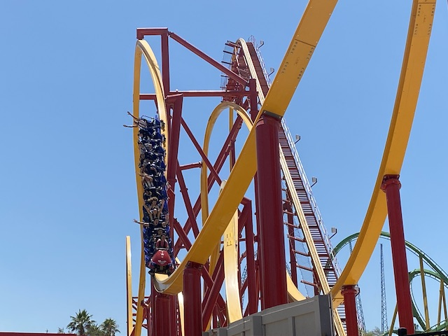
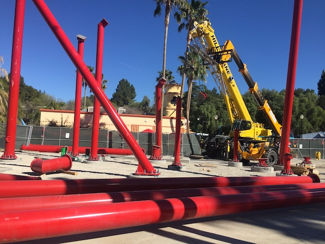
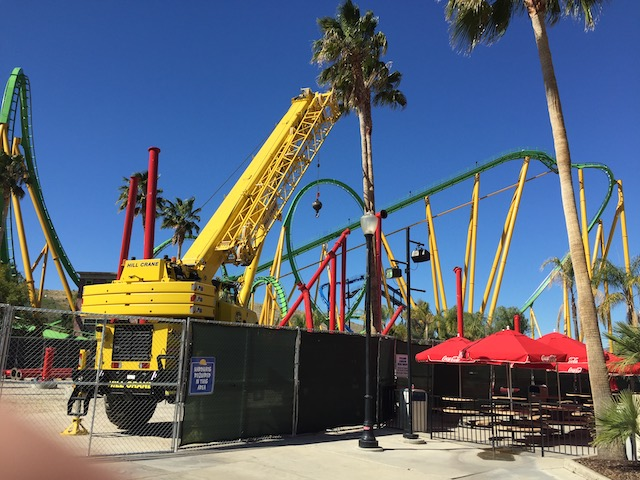

| |
Wonder Woman: Flight of Courage Review

Today at Incrediblecoasters, we're going to be reviewing Wonder Woman: Flight of Courage. Now this is one of the newer models of RMCs. It's a different layout from the original version. But this one is starting to catch on as well. But for now, let's get in the cars. We pull down the restraints (these resteraints are weird. They feel more like a figher pilot seatbelt), and we're off. We head around a turn and start climbing the lifthill. You get a really nice view of a lot of the SFMM coasters. But particuarly of Riddlers Revenge since...we're right by that ride. Eventually however, we reach the top. We crest the lifthill and head down the first drop. I know we're spoiled since....this is the park with X2, which....yeah. Best first drop ever! But this seriously is a kickass first drop, giving us a nice pop of ejector air as we head down the nearly vertical drop. We then head into a Dive Loop. It's not quite as graceful as the Dive Loops you find on the standard B&Ms, but it's still a lot of fun. Plus, this is far whipper than ANY B&M Dive Loop. And yes, I'm including Kumba in that. We then head over an airtime hill. And YOINK!!! There's a REALLY nice pop of ejector air here! I know for the longest time, I would complain that California was an airtime desert. Well, between Twisted Collosus, this, and other new rides, I think we fixed that problem. We then head through a Zero-G Roll. However, it's not quite that. Mainly because here....you come out in the same direction you came in. So you reverse and come back out in the opposite direction instead of fully flipping. And yeah. That gives a nice little bit of laterals. A big fan of that element. We then head up a curved hill and around a tight turn. There's some really good laterals here. True, it's nothing truly earth-shattering. But it's still pretty good. We drop back down, getting a lot of speed. We then head straight into a Zero G Roll. And this one is a normal one. You get a really nice WHIP in here. True, it's not as strong as the whip on Railblazer, but this is still really good. The whip here is on par with the ultra-strong B&Ms of the 90s. We then head up a hill, get a nice pop of ejector air, and go right into the midcourse brakes. Sadly, this cuts down a bit on the speed. But we then drop back down and get a a lot of our speed back. We then head through a low to the ground turn that gives us a nice amount of whip. We then head right over a banked airtime hill. Ooh. Banked Airtime. That's always fun and an RMC staple. And of course, we go through another banked airtime hill. WEE!!! SIDEWAYS AIRTIME!!! OK, not sideways airtime. But banked airtime at the very least. OK. The last airtime hill is normal and straight (OK. Just because it's straight doesn't make it not normal. I apologize to all the queer airtime hills out there lol). But it's still fun. Hop over the hill. Wee! Airtime! Hop up another banked hill. We then head into the bonus element. The one thing that technically makes this not a clone of Jersey Devil (aside from it being so much stronger for some reason). Now this element is...nothing special. Just another little banked hill without much airtime. But it's still a fun element. And then we glide right into the brake run. And yeah. This ride kicks ass. Sure, I may prefer the other RMCs, including the other Single Rail layout as....Railblazer is better than this. But this ride still kicks ass. It just gets overshadowed by so many other great coasters. I mean, this park does have X2 and Twisted Collosus. So it's easy to get distracted. Oh, and if your home park is Six Flags Great Adventure, do NOT skip this ride thinking "Bah, it's just West Coast Jersey Devil". NO IT'S NOT!!! This ride is SO MUCH BETTER!!! You have to give it a ride and check it out for yourself.
9/10
Location: Six Flags Magic Mountain
Opened: 2022
Built by: Rocky Mountain Coasters
Last Ridden: July 22, 2023
I have ridden this exact same ride at the following parks.
Six Flags Great Adventure
Wonder Woman: Flight of Courage Photos







Home
|